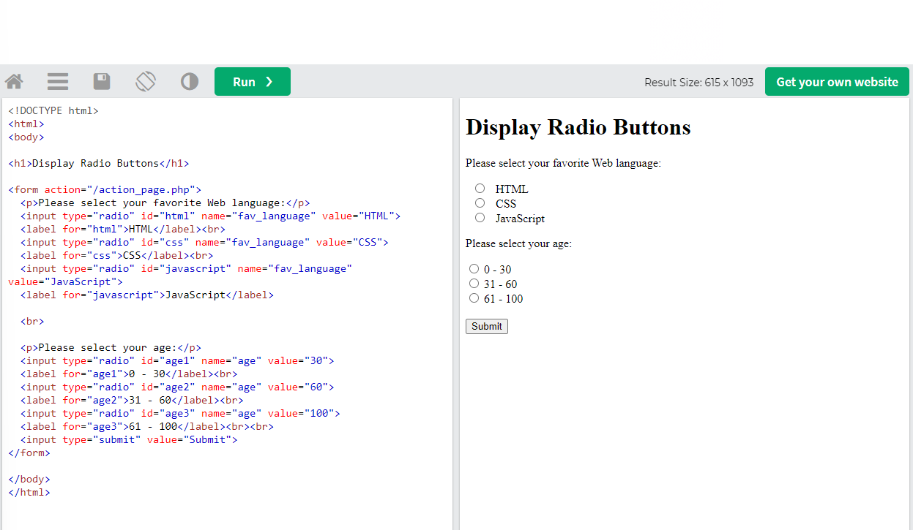
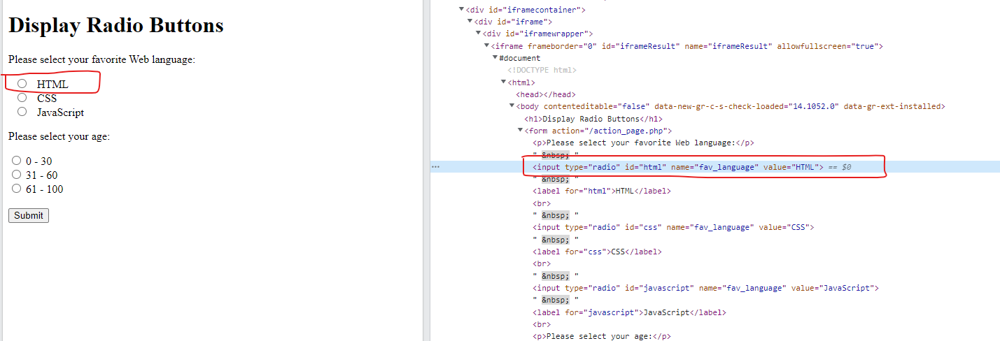
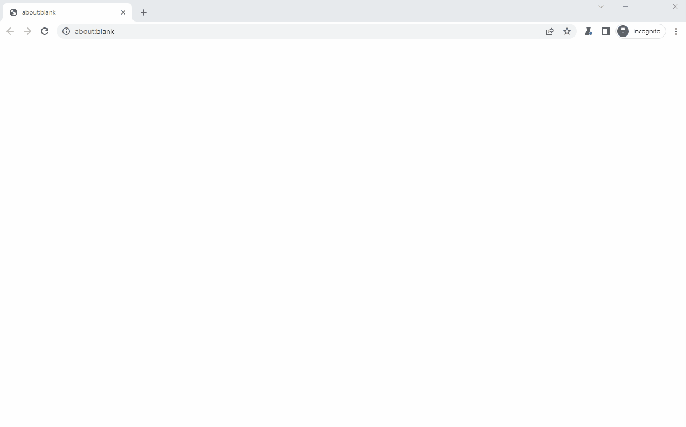

Playwright Example >> RadioButton
In this article, we will use Playwright (Python version) to check and toggle Radio buttons on the web page.
- Check and Toggle Radio buttons
- Conclusion

Check and Toggle Radio buttons
We will use https://www.w3schools.com/tags/tryit.asp?filename=tryhtml5_input_type_radio to test our code.
There are two groups of radio buttons on the web page as shown below.

Firstly, let’s check the favorite web language radio button group. We can use the devTool of browser to confirm the source code of the elements.

As you can see, the id of HTML option is html, so we can use the code below to check the HTML option.
- locator(#id) + click()/check()
We must find the iframe element first, and find the radio button element by specifying the id in the locator() method. Finally, call the found element’s check() method.
# Check #html
page.frame_locator("iframe[name=\"iframeResult\"]") \
.locator("#html") \
.check()
# OR
page.frame_locator("iframe[name=\"iframeResult\"]") \
.locator("#html") \
.click()
- locator(filter condition) + first/nth() + click()/check()
If multiple elements are found by the locator(), you should specify which one by using first property or nth() method.
Attention: the index specified in nth() should start from 0.
The first property is equivalent to nth(0).
The code below will firstly check “0 - 30” option and then check “61 - 100” option.
# Check input[name="age"] >> nth=0
page.frame_locator("iframe[name=\"iframeResult\"]") \
.locator("input[name=\"age\"]").first \
.check()
# Check input[name="age"] >> nth=2
page.frame_locator("iframe[name=\"iframeResult\"]") \
.locator("input[name=\"age\"]") \
.nth(2).click()
- locator(label text)
We can also specify the label text to locate the radio button element.
# Check 31 - 60
page.frame_locator("iframe[name=\"iframeResult\"]") \
.locator("text=31 - 60") \
.click()
Below is the complete code.
from playwright.sync_api import Playwright, sync_playwright, expect
def run(playwright: Playwright) -> None:
browser = playwright.chromium.launch(headless=False)
context = browser.new_context()
# Open new page
page = context.new_page()
# Go to https://www.w3schools.com/tags/tryit.asp?filename=tryhtml5_input_type_radio
page.goto("https://www.w3schools.com/tags/tryit.asp?filename=tryhtml5_input_type_radio")
# Check #html
page.frame_locator("iframe[name=\"iframeResult\"]") \
.locator("#html") \
.click()
# Check input[name="age"] >> nth=0
page.frame_locator("iframe[name=\"iframeResult\"]") \
.locator("input[name=\"age\"]").first \
.check()
# Check input[name="age"] >> nth=2
page.frame_locator("iframe[name=\"iframeResult\"]") \
.locator("input[name=\"age\"]") \
.nth(2).click()
# Check 31 - 60
page.frame_locator("iframe[name=\"iframeResult\"]") \
.locator("text=31 - 60") \
.click()
# Click text=Submit
page.frame_locator("iframe[name=\"iframeResult\"]") \
.locator("text=Submit") \
.click()
# ---------------------
context.close()
browser.close()
with sync_playwright() as playwright:
run(playwright)
The execution animation is as follows.

Conclusion
We can find the radio button element by using locator() method.
We can use first proptery or nth(index start from 0) to locate the target element if multiple results are found.
We can use click() or check() method of the found element to check it.
If you want to learn the basic usage of Playwright, you can read the article below.
Playwright » Basic Usage
https://thats-it-code.com/playwright/playwright__basic-usage/
If you want to learn the usage of Checkbox, you can read the article below.
Playwright Example » Checkbox
https://thats-it-code.com/playwright/playwright-example__checkbox/